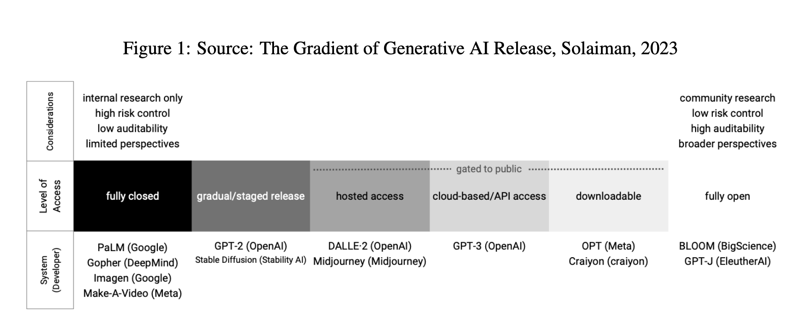

Open (For Business): Big Tech, Concentrated Power, and the Political Economy of Open AI
Abstract
This paper examines ‘open’ AI in the context of recent attention to open and open source AI systems. We find that the terms ‘open’ and ‘open source’ are used in confusing and diverse ways, often constituting more aspiration or marketing than technical descriptor, and frequently blending concepts from both open source software and open science. This complicates an already complex landscape, in which there is currently no agreed on definition of ‘open’ in the context of AI, and as such the term is being applied to widely divergent offerings with little reference to a stable descriptor. So, what exactly is ‘open’ about ‘open’ AI, and what does ‘open’ AI enable? To better answer these questions we begin this paper by looking at the various resources required to create and deploy AI systems, alongside the components that comprise these systems. We do this with an eye to which of these can, or cannot, be made open to scrutiny, reuse, and extension. What does ‘open’ mean in practice, and what are its limits in the context of AI? We find that while a handful of maximally open AI systems exist, which offer intentional and extensive transparency, reusability, and extensibility– the resources needed to build AI from scratch, and to deploy large AI systems at scale, remain ‘closed’—available only to those with significant (almost always corporate) resources. From here, we zoom out and examine the history of open source, its cleave from free software in the mid 1990s, and the contested processes by which open source has been incorporated into, and instrumented by, large tech corporations. As a current day example of the overbroad and ill-defined use of the term by tech companies, we look at ‘open’ in the context of OpenAI the company. We trace its moves from a humanity-focused nonprofit to a for-profit partnered with Microsoft, and its shifting position on ‘open’ AI. Finally, we examine the current discourse around ‘open’ AI–looking at how the term and the (mis)understandings about what ‘open’ enables are being deployed to shape the public’s and policymakers’ understanding about AI, its capabilities, and the power of the AI industry. In particular, we examine the arguments being made for and against ‘open’ and open source AI, who’s making them, and how they are being deployed in the debate over AI regulation. Taken together, we find that ‘open’ AI can, in its more maximal instantiations, provide transparency, reusability, and extensibility that can enable third parties to deploy and build on top of powerful off-the-shelf AI models. These maximalist forms of ‘open’ AI can also allow some forms of auditing and oversight. But even the most open of ‘open’ AI systems do not, on their own, ensure democratic access to or meaningful competition in AI, nor does openness alone solve the problem of oversight and scrutiny. While we recognize that there is a vibrant community of earnest contributors building and contributing to ‘open’ AI efforts in the name of expanding access and insight, we also find that marketing around openness and investment in (somewhat) open AI systems is being leveraged by powerful companies to bolster their positions in the face of growing interest in AI regulation. And that some companies have moved to embrace ‘open’ AI as a mechanism to entrench dominance, using the rhetoric of ‘open’ AI to expand market power while investing in ‘open’ AI efforts in ways that allow them to set standards of development while benefiting from the free labor of open source contributors.
Finally, even maximal transparency in the context of AI systems doesn’t equal the same level of scrutability that open code and clear documentation do with traditional software. In the case of AI, code and documentation can’t tell you exactly how a model will perform in agiven context, or enable you to predict the system’s emergent properties. (p. 2)
And that some companies have moved to embrace ‘open’ AI as a mechanism to entrench dominance, using the rhetoric of ‘open’ AI to expand market power, and investing in ‘open’ AI efforts in ways that allow them to set standards of development while benefiting from the free labor of open source contributors. (p. 3)
We find that even though there are a handful of meaningfully transparent, reusable, and extensible AI systems, these and all other ‘open’ AI exists within a deeply concentrated tech company landscape. With scant exceptions that prove the rule, only a few large tech corporations can create and deploy large AI systems at scale, from start to finish - a far cry from the decentralized and modifiable infrastructure that once animated the dream of the free/opensource software movement. (p. 4)
Given the immense importance of scale to the current trajectory of artificial intelligence,this means ‘open’ AI cannot, alone, meaningfully ‘democratize’ AI, nor does it pose a significant challenge to the concentration of power in the tech industry. (p. 4)
At one end of a long gradient, there are a handful of maximally open AI efforts – these are non-corporate AI efforts that go to the lengths possible to offer meaningful transparency, reusability, and extensibility. But developing these models still requires access to costly computational infrastructure, which is usually leasedfrom large tech companies.18 In addition they require significant funding to support the development andmaintenance of many complex components, including painstakingly crafted open datasets, and extensive documentation. (p. 5)
There is a long history and clear playbook for industry capture and instrumentation of open source projects, and major AI companies recognize the value of open source AI in leveraging the benefits of owning the ecosystem, enjoying the fruits of community labor, and defining the terms of engagement. (p. 5)
The ideology of the open source software movement is frequently mapped onto the concept of ‘open’ AI in ways that fail to account for the significant differences between large AI systems and traditional software. This shapes a narrative that assumes ‘open’ AI can on its own level the playing field, promote innovation, and democratize development and use. While some of this projection likely has its origin in the muddy popular definition of AI, and many contributors to open AI efforts do not espouse these views, major AI players strategically deploy such rhetorics in ways calibrated to entrench their power, often under the banner of democratized access. (p. 5)

This means that while some lower level software that optimizes computational power for AI development may be open in that one can inspect their code, in practice, this software is often designed for efficiency in proprietary hardware environments, and is developed and governed by companies selling compute resources and/or licensing AI models. (p. 8)
The labor required to curate, prepare data and calibrate systems is poorly paid, but it still costs a significant amount given the number of workers and time required to shape the data to build contemporary AI systems. (p. 11)
As illustrated above, large, entrenched tech companies like Google, Microsoft, Meta and others have vested interests in ‘open’ AI development. The author of the leaked ‘Google Moat’ memo said the quiet part out loud: “the value of owning the ecosystem” to the company “cannot be overstated”: such ecosystem capture directly contributed to Google’sdominance across the domains of search, mobile, and advertising.119 Similarly, as the platform where much open sourcecode is hosted (code that has been scraped and used to train models like Microsoft’s CoPilot), Microsoft’s Github has its own vested interests in unimpeded open source development, even as Microsoft-supported company OpenAI remains much more circumspect as it pushes for licensing (enabling Microsoft to tacitly support contradictory standpoints that both, in the end, benefit the company). To protect their interests, many companies are lobbying for exemptions to baseline documentation and accountability mechanisms. (p. 16)
Simply making the code open does not guarantee that expert volunteers will spend their time and resources thoroughly reviewing it. (p. 16)
What Heartbleed demonstrates is that just because code can be audited does not mean that it will be. Technically ‘open’code and documentation is not itself sufficient to ensure careful review and remediation: this dynamic is exacerbated in the case of AI, where large probabilistic models function in ways that produce outputs and decisions that cannot be predicted from the code, documentation, and data alone. (p. 17)
the fine-tuned end products largely function as barnacles on the hull of Big Tech, rather than a meaningful alternative to it. They still need to be run on Big Tech infrastructures (as a rule), and cede power to define and create the core model logics to the large companies who have the resources to create them from scratch. (p. 18)
But they also offer a narrowly defined interpretation of innovation - one that does not meaningfully trouble the incentive structures, business models, or the dynamics that dictate who is a ‘user’ of AI systems vs whom such systems are ‘used on’. Nor does it meaningfully shift who benefits from the development of AI systems, and who risks the harms. (p. 19)
@article{Widder_West_Whittaker_2023, address={Rochester, NY}, type={SSRN Scholarly Paper}, title={Open (For Business): Big Tech, Concentrated Power, and the Political Economy of Open AI}, url={[https://papers.ssrn.com/abstract=4543807](https://papers.ssrn.com/abstract=4543807)}, abstractNote={This paper examines ‘open’ AI in the context of recent attention to open and open source AI systems. We find that the terms ‘open’ and ‘open source’ are used in confusing and diverse ways, often constituting more aspiration or marketing than technical descriptor, and frequently blending concepts from both open source software and open science. This complicates an already complex landscape, in which there is currently no agreed on definition of ‘open’ in the context of AI, and as such the term is being applied to widely divergent offerings with little reference to a stable descriptor. So, what exactly is ‘open’ about ‘open’ AI, and what does ‘open’ AI enable? To better answer these questions we begin this paper by looking at the various resources required to create and deploy AI systems, alongside the components that comprise these systems. We do this with an eye to which of these can, or cannot, be made open to scrutiny, reuse, and extension. What does ‘open’ mean in practice, and what are its limits in the context of AI? We find that while a handful of maximally open AI systems exist, which offer intentional and extensive transparency, reusability, and extensibility– the resources needed to build AI from scratch, and to deploy large AI systems at scale, remain ‘closed’—available only to those with significant (almost always corporate) resources. From here, we zoom out and examine the history of open source, its cleave from free software in the mid 1990s, and the contested processes by which open source has been incorporated into, and instrumented by, large tech corporations. As a current day example of the overbroad and ill-defined use of the term by tech companies, we look at ‘open’ in the context of OpenAI the company. We trace its moves from a humanity-focused nonprofit to a for-profit partnered with Microsoft, and its shifting position on ‘open’ AI. Finally, we examine the current discourse around ‘open’ AI–looking at how the term and the (mis)understandings about what ‘open’ enables are being deployed to shape the public’s and policymakers’ understanding about AI, its capabilities, and the power of the AI industry. In particular, we examine the arguments being made for and against ‘open’ and open source AI, who’s making them, and how they are being deployed in the debate over AI regulation. Taken together, we find that ‘open’ AI can, in its more maximal instantiations, provide transparency, reusability, and extensibility that can enable third parties to deploy and build on top of powerful off-the-shelf AI models. These maximalist forms of ‘open’ AI can also allow some forms of auditing and oversight. But even the most open of ‘open’ AI systems do not, on their own, ensure democratic access to or meaningful competition in AI, nor does openness alone solve the problem of oversight and scrutiny. While we recognize that there is a vibrant community of earnest contributors building and contributing to ‘open’ AI efforts in the name of expanding access and insight, we also find that marketing around openness and investment in (somewhat) open AI systems is being leveraged by powerful companies to bolster their positions in the face of growing interest in AI regulation. And that some companies have moved to embrace ‘open’ AI as a mechanism to entrench dominance, using the rhetoric of ‘open’ AI to expand market power while investing in ‘open’ AI efforts in ways that allow them to set standards of development while benefiting from the free labor of open source contributors.}, number={4543807}, author={Widder, David Gray and West, Sarah and Whittaker, Meredith}, year={2023}, month={Aug}, language={en} }